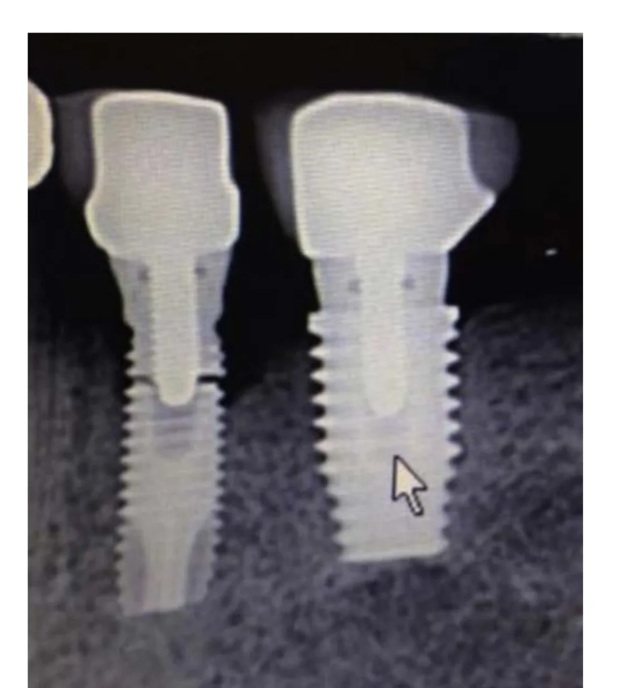
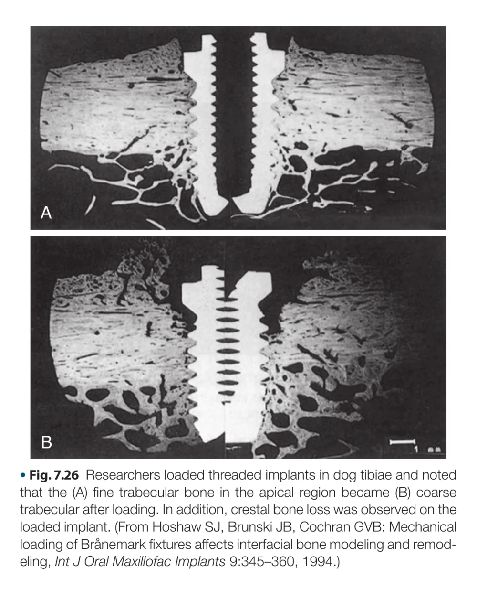

نسخه استخراجشده؛ ترجمه یا تأیید علمی انجام نشده است. وضعیت: captured
وقتی شمارش عوامل خطر بالا رفت، قضیه میگوید طرح باید عوض شود. اما چگونه؟ اولویت روشن است:
«ایمپلنتهای بیشتر راهحل انتخابی برای کاهش استرساند، همراه با افزایش عرض یا ارتفاع ایمپلنت (بهویژه در تراکم ضعیف استخوان).»
«راهحل انتخابی» یعنی گزینهی نخست. نه تغییر ماده، نه تغییر سیستم — ایمپلنت بیشتر.
و روشنتر بگوییم: «مؤثرترین روش افزایش سطح تکیهگاه ایمپلنت، افزایش شمار ایمپلنتهای بهکاررفته برای پشتیبانی از پروتز است.»
و منطقش از معادلهی استرس میآید: استرس = نیرو ÷ سطح. ایمپلنت بیشتر یعنی سطح بیشتر در مخرج.
و قاعدهی عملی که از این نتیجه میشود:
«عقل سلیم بالینی نشان میدهد که بهتر است با یک ایمپلنت اضافه خطا کنی تا با ایمپلنتهای بسیار کم. یک ایمپلنت کم، و کل درمان همراه با پروتز ممکن است شکست بخورد. یک ایمپلنت زیاد بهندرت مشکلساز خواهد شد.»
عدم تقارن را ببین: هزینهی «یکی کم» شکست کل درمان است؛ هزینهی «یکی زیاد» تقریباً هیچ. وقتی دو خطا اینقدر نامتقارناند، انتخاب روشن است.
و یک تمایز مهم که نباید از قلم بیفتد — طول ایمپلنت:
دربارهی طول بدان: «طول بیشازحد ایمپلنت در رابط استخوان کرستال حیاتی نیست، ولی برای ثبات اولیه و مقدار کلی رابط استخوانـایمپلنت حیاتی است. طول افزوده همچنین مقاومت در برابر گشتاور یا نیروهای برشی را هنگام پیچ شدن اباتمنتها فراهم میکند.»
اما: «با این حال، طول اضافی کار چندانی برای کاهش استرسی که در ناحیهی ترانساُستئال اطراف ایمپلنت در کرست ریج حین بارگذاری اکلوزالی رخ میدهد انجام نمیدهد. بنابراین طول بیشازحد ایمپلنت در کاهش استرس ناشی از عوامل نیرو بههمان اندازه مؤثر نیست.»
این یک تصحیح باور رایج است. بسیاری فکر میکنند «ایمپلنت بلندتر = تحمل بار بیشتر». طول برای ثبات اولیه ارزش دارد، ولی برای کاهش استرس کرستال — که همان جایی است که تحلیل رخ میدهد — کمکی نمیکند.
پس ترتیب اثربخشی چنین است: شمار ایمپلنت ← قطر ← طول.
طراحی ایمپلنت هم سطح را زیاد میکند — ایمپلنت رزوهدار حدود ۳۰ درصد سطح بیشتری از ایمپلنت استوانهای هماندازه دارد — و گاهی اثرش از افزایش عرض هم بیشتر است.
و حالا عددی که تصمیم قطر را کمّی میکند:
«هر ۰٫۲۵ میلیمتر افزایش در قطر ایمپلنت ممکن است سطح کلی را تقریباً ۵ تا ۱۰ درصد در یک بدنهی ایمپلنت استوانهای افزایش دهد.»
این عدد را جدی بگیر. یک چهارم میلیمتر — که تقریباً هیچ بهنظر میرسد — تا ده درصد سطح میافزاید. اگر همین نسبت را ادامه دهی، تفاوت ایمپلنت ۳٫۷۵ و ۴٫۷ میلیمتری یک میلیمتر نیست؛ حدود بیست تا چهل درصد سطح است.
و پیامد جراحی این تصمیم پروتزی:
«افزایش استخوان در عرض ممکن است برای افزایش قطر ایمپلنت بهاندازهی ۱ میلیمتر اندیکاسیون داشته باشد، وقتی عوامل نیرو بیش از حد ایدهآل باشند.»
یک زنجیرهی تصمیم دیگر از پروتز به جراحی: عوامل نیروی بالا ← نیاز به قطر بیشتر ← نیاز به عرض استخوان بیشتر ← پیوند عرضی.
و توجه کن که این پیوند برای «جا شدن ایمپلنت» نیست — ایمپلنت باریکتر هم جا میشد. پیوند برای رسیدن به سطح کافی است. همان تمایزی که در بحث پیوند عمودی و ارتفاع تاج دیدی.
و هشدار دربارهی طراحی گردن ایمپلنت:
و یک هشدار: «یک کالر صاف در ماژول کرست ممکن است نیروهای برشی را به استخوان منتقل کند.»
و از یونیت پیش میدانی برش چه معنایی دارد: مخربترین حالت بارگذاری، دقیقاً در کرست که آسیبپذیرترین ناحیه است.

دربارهی کانتیلور جای سهلانگاری نیست:
«کانتیلورها یک تشدیدکنندهی نیرو هستند و یک عامل خطر قابلتوجه در تکیهگاه ایمپلنت، شل شدن پیچ، تحلیل استخوان کرستال، شکست، و هر مورد دیگری که از نیرو اثر منفی میگیرد بهشمار میروند.»
و نتیجهگیری روشن: «بنابراین هدف موقعیت ایمپلنت باید حذف کانتیلورها هرجا ممکن است باشد، بهویژه وقتی سایر عوامل نیرو افزایش یافتهاند.»
به قید پایانی دقت کن: «بهویژه وقتی سایر عوامل نیرو افزایش یافتهاند». یعنی کانتیلور در بیمار کمخطر یک بحث است، و در بیمار پرخطر یک همافزایی خطرناک.
و شواهد بالینیاش:
«گزارشهای بالینی افزایش تحلیل استخوان مارجینال را در اطراف ایمپلنتهای نزدیکتر به کانتیلوری که برای بازسازی دندانهای ازدسترفته به کار رفته نشان دادهاند.»
و رابطهی علّی: «طول کانتیلور و افزایش استرس اکلوزالی به نزدیکترین تکیهگاه مستقیماً مرتبطاند و به این واقعیت اشاره میکنند که افزایش تحلیل استخوان مارجینال ممکن است به استرس اکلوزالی مربوط باشد.»
یک حلقهی بازخورد که باید ببینی:
«در نتیجهی ارتفاع بیشتر تاج ناشی از تحلیل عمودی استخوان، اضافهبار اکلوزالی پس از رخ دادن تحلیل استخوان کرستال افزایش خواهد یافت.»
یعنی: تحلیل کرستال ← تاج بلندتر ← بازوی ممان بلندتر ← استرس بیشتر ← تحلیل بیشتر.
این یک مارپیچ رو به پایین است — و به همین دلیل مداخله در نخستین نشانههای تحلیل کرستال اهمیت دارد، نه پس از پیشرفت آن.
و اما یک نکتهی جالب که باید صادقانه گفت:
«عنصری گیجکننده در رابطهی نیروی اکلوزالی و تحلیل استخوان پریایمپلنت، نبود تحلیل مداوم استخوان تا شکست ایمپلنت است.»
یعنی تحلیل ناشی از بار، معمولاً در یک نقطه متوقف میشود و ایمپلنت لزوماً شکست نمیخورد. و توضیحش ظریف است:
«بنابراین در بسیاری موقعیتها، افزایش ۳۵ تا ۶۵ درصدی استحکام استخوان، از راه تغییر از بارهای برشی به فشاری و/یا کششی، برای متوقف کردن فرآیند تحلیل استخوان کافی است.»
سازوکار را ببین: کالر صاف ماژول کرست، بار را بهصورت برشی به استخوان میدهد. تحلیل معمولاً تا نخستین رزوه (یا تا سطح زبر) پیش میرود؛ از آنجا نوع نیرو از برشی به فشاری یا کششی تغییر میکند و چون استخوان در این دو حالت قویتر است، فرآیند میایستد.
دلیل دوم زیستی است: استخوان در سال نخست بارگذاری کاملتر معدنی و متراکمتر میشود، و همان باری که ابتدا اضافهبار بود دیگر تحلیل تازه نمیسازد.
و یک عدد برای مقیاس عوارض مکانیکی: «پیچهای اباتمنت معمولاً قطر بزرگتری دارند و بنابراین کمتر میشکنند، با بروز میانگین ۲ درصد و دامنهی ۰٫۲ تا ۸ درصد.»
و نکته این است که همان اصل «قطر بیشتر = مقاومت بیشتر» که برای ایمپلنت گفتیم، برای پیچ هم صدق میکند — و از یونیت پیش میدانی که این رابطه توان چهارم است.
اسپلینت کردن — راهکاری که چند مسئله را همزمان حل میکند:
باید پذیرفت که «مفهوم اسپلینت کردن در دندانپزشکی ایمپلنت بحثبرانگیز است»، ولی شواهد را ببین:
«مطالعات نشان دادهاند که نیروی توزیعشده روی سه تکیهگاه به استرس موضعی کمتری بر استخوان کرستال میانجامد تا دو تکیهگاه.» — با این قید مهم که «این مطالعه فقط بر ایمپلنتهایی که به هم اسپلینت شدهاند اعمال میشود.»
و نتیجهی عملی: «بنابراین شمار پونتیکها باید کاهش یابد و شمار تکیهگاههای ایمپلنت باید افزایش یابد هرگاه نیروها در مقایسه با طرح درمان بیمار ایدهآل با عوامل نیروی حداقلی افزایش یافته باشند.»
و اسپلینت کردن چهار سود همزمان دارد:
• «گیر پروتز نیز با شمار بیشتر تکیهگاههای اسپلینتشده بهبود مییابد.»
• «این رویکرد همچنین بروز رستوریشنهای بدون گیر و شکست مادهی ترمیمی را کاهش میدهد.»
• «مقدار کلی استرس بر سیستم کاهش مییابد.»
• و مهمترین از منظر یونیت پیش: «مارجینال ریجهای روی کراونهای ایمپلنت با کانکتورهای کراونهای اسپلینتشده پشتیبانی میشوند، که به نیروهای فشاری بهجای بارهای برشی روی مادهی ترمیمی میانجامد.»
این بند آخر را دو بار بخوان. اسپلینت کردن فقط بار را تقسیم نمیکند — نوع بار را از برش به فشار تغییر میدهد. و مادهی ترمیمی و سمان در برش بسیار ضعیفتر از فشارند؛ برای نمونه سمان زینکفسفات حدود ۱۲٬۰۰۰ psi فشار را تحمل میکند ولی فقط ۵۰۰ psi برش را.
